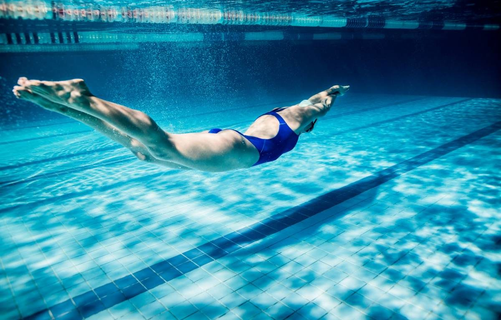
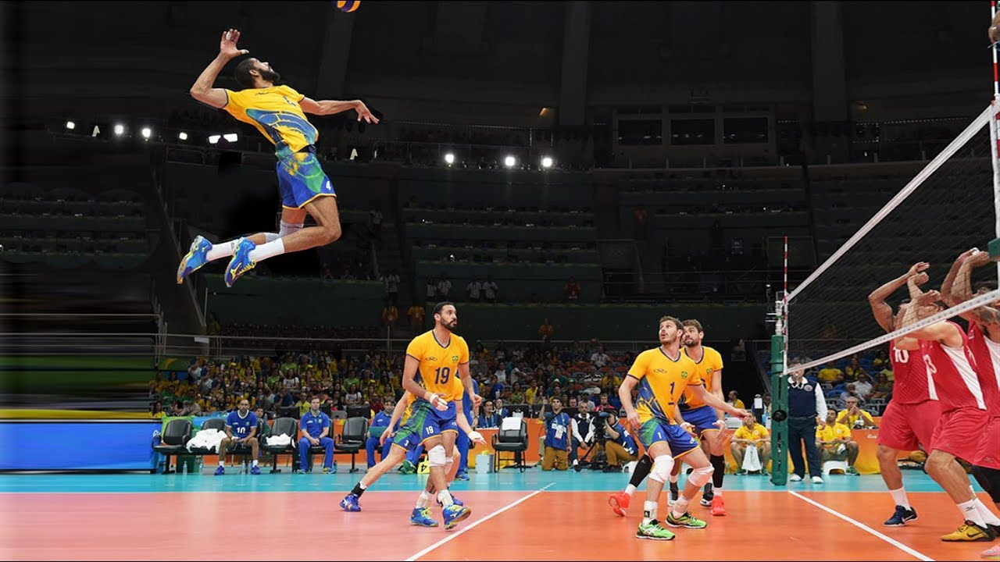
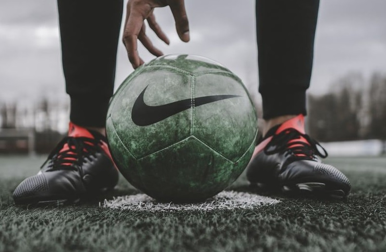

About me
My Hobbies
Swimming

I started swimming really early, when I was 6-7 years old.
I had the opportunity to swim competitively from the age of 11 to 18 where I succeeded
to go on the podium in departmental.
Then I passed a diploma related to this sport that is the BNSSA which gave me a lot of opportunity.
Since then I have been swimming for fun and I hope one day to have the
opportunity to cross the English Channel.
18 years of practice :
Piano
I started playing piano when I was 7 years old. I had lessons until I was 18. Finally I had the opportunity to do several auditions all over France.
18 years of practice:
VolleyBall

I started volleyball for the first time in engineering school where
I could join the first team. (Thanks to my size I admit)
Together we managed to finish first in our university division.
I continued to play during 1 more year as an hobby
Finally I played 1 year in a club in the first team and
we won the league of our division.
2 years of practice:
Skiing
I started skiing when I was 7 years old. I had the opportunity to go skiing almost every year.
15 years of practice:
Football

I started football in high school and I continued until the end of my studies. Unfortunately, I stoped due to injury.
6 years of practice :
Fitness
My practice of fitness started in addition to other sports.
5 years of practice in many diciplines: